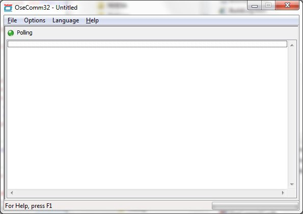

| Description |
 OseComm is a new communication protocol for the Opticon Hand hel held terminals and can be used as a replacement for the NetO protocol. The OseComm protocol supports more then only file transfers. All options that are supported by the OseComm protocol are called tasks. All of these task are controlled by the PC. The protocol can handle a range of task in one communication run. Supported OseComm protocol tasks:
|